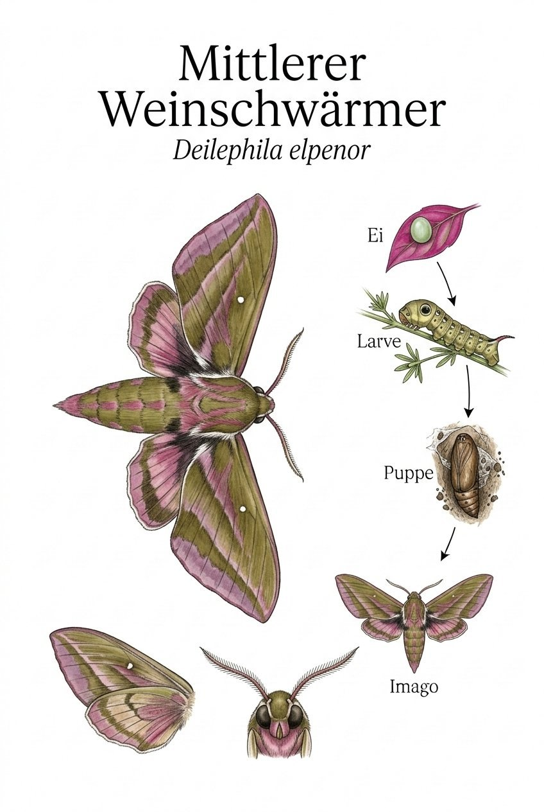
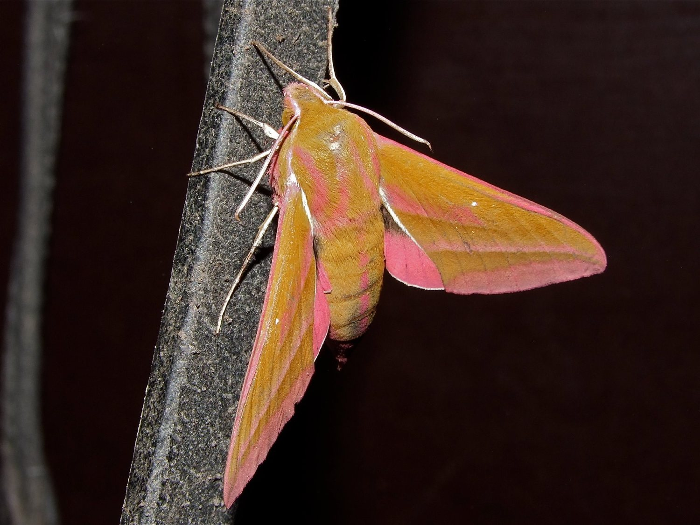

Insekten › Schmetterlinge › Nachtfalter › Schwärmer

Deilephila elpenor

Foto: Michael Baur · Olympus OM-5 · CC BY-NC
Wer sagt, Nachtfalter seien grau und unscheinbar, hat den Mittleren Weinschwärmer noch nicht gesehen. Sein Körper und die Hinterflügel leuchten in einem satten Rosa, die Vorderflügel sind olivgrün mit rosa Streifen – eine Farbkombination, die man keinem Nachtflieger zutrauen würde. In der Dämmerung surrt er mit rasenden Flügelschlägen wie ein kleiner Hubschrauber von Blüte zu Blüte, ohne zu landen.
Der Weinschwärmer besitzt einen Saugrüssel, der zusammengerollt fast so lang ist wie sein Körper. Im Flug entrollt er ihn blitzschnell in tief röhrige Blüten – Phlox, Tabak, Lichtnelke – und trinkt schwebend den Nektar. Für diese Blüten ist er oft der einzige Bestäuber, der nachts aktiv ist und tief genug reicht. Eine stille, nächtliche Partnerschaft, die uns Menschen meist völlig verborgen bleibt.
Die Raupe des Weinschwärmers trägt auf dem Vorderkörper zwei große, augenähnliche Flecken. Wenn sie sich bedroht fühlt, zieht sie den Kopf ein und schwillt der vordere Körperteil auf – plötzlich starrt dem Angreifer ein vermeintliches Schlangenauge entgegen. Dieser Trick funktioniert so gut, dass selbst erfahrene Vogelaugen kurz zögern – lange genug für die Raupe, um das Weite zu suchen.
Texte und Bilder aus der Broschüre „Schmetterlinge im Ebsdorfergrund“ (Michael Baur), 1:1 übernommen · Fotos CC BY-NC, Illustrationen im Stil klassischer Lehrtafeln. Die Artseite ist der gemeinsame Endpunkt von Bestimmungsschlüssel und Stammbaum.